Cloudflare Tunnel · Windows · 内网穿透
2026免费内网穿透！Cloudflare Tunnel 零成本教程｜无需公网IP，小白也能搭建
本文按视频顺序记录如何用 Cloudflare Tunnel 把 Windows 电脑上的本地服务发布到自己的域名， 不需要公网 IP，也不需要在路由器中做端口转发。
在 YouTube 观看本期视频cloudflared 会主动向 Cloudflare 建立出站连接，
再把指定公网域名的访问转发到本机服务。因此家中没有公网 IP、处于运营商 NAT 后面，
通常也能使用。你不需要对外开放路由器端口。
开始前要准备什么
- 一个 Cloudflare 账户。
- 一个已经接入 Cloudflare DNS 的域名。视频从账户中已有的域名进行选择。
- 一台保持联网的 Windows 电脑，并拥有管理员权限。
- 一个可以在本机访问的 Web 服务，例如网站、开发服务器或本地 AI WebUI。
- 明确该服务监听的协议、地址和端口。视频示例为
HTTP和127.0.0.1:8080。
这期教程要实现的效果
本地服务原本只能通过 localhost 或 127.0.0.1 在当前电脑访问。
完成 Tunnel 后，访问自己设置的公网域名时，Cloudflare 会把请求沿隧道送到这台电脑上的指定端口。
视频最终把上一篇教程中的 llama.cpp 本地 AI 服务从
127.0.0.1:8080 映射到一个子域名，并在浏览器中通过公网域名完成对话测试。
登录 Cloudflare 并进入连接器页面
-
打开 Cloudflare 控制台
浏览器访问 dash.cloudflare.com 并登录账户。
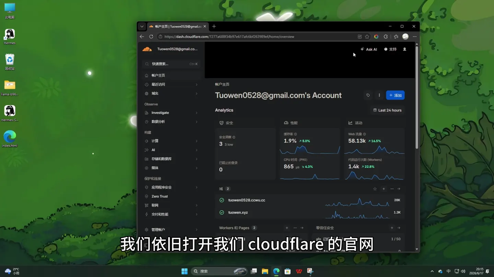
确保当前账户中已经添加了准备用于公网访问的域名。 -
进入 Zero Trust / Cloudflare One
在左侧找到 Zero Trust。进入后，在左侧打开 网络，然后点击 连接器。
Cloudflare 在 2026 年也把 Tunnel 管理入口加入了主控制台的 Networking → Tunnels。如果菜单与视频不同，可以直接搜索“Tunnels”。
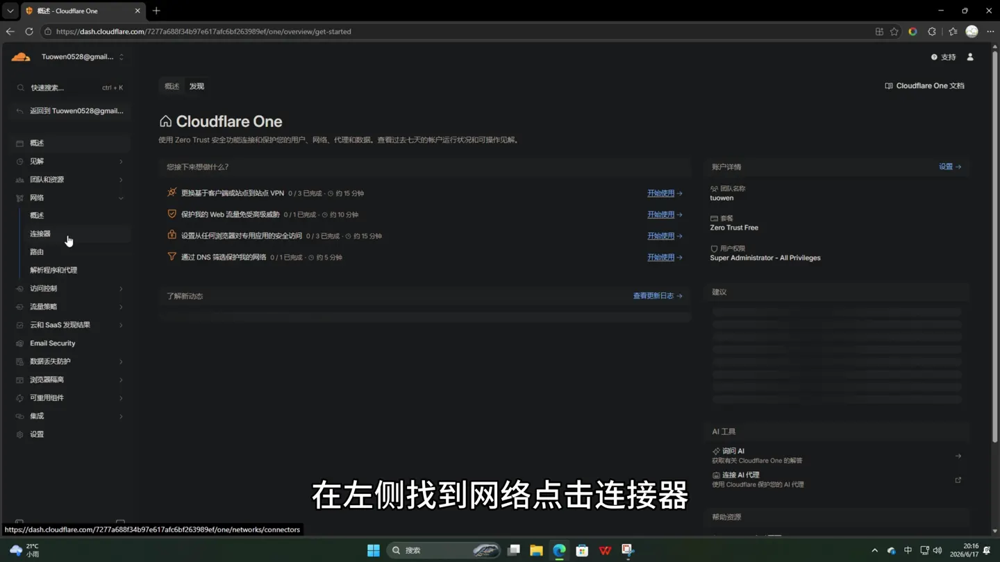
连接器页面用于管理 Cloudflare Tunnel 和其他网络连接方式。
创建一个 Cloudflare Tunnel
-
点击添加隧道
在连接器页面点击 添加隧道。 如果页面要求选择连接器类型，选择 Cloudflared，然后继续。
-
给隧道命名
输入便于识别的名称。视频为了测试使用了类似
tuowen001的名称。 读者应使用自己的名称，例如home-ai-windows，不要照抄视频示例。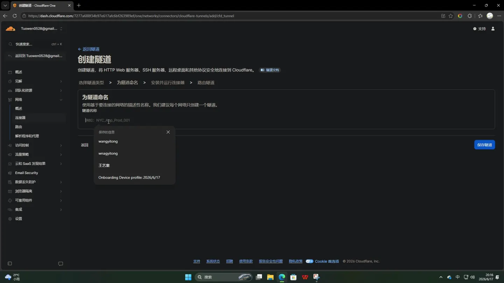
隧道名称只用于后台识别，不会自动成为公网域名。 -
保存隧道
点击 保存隧道，进入连接器安装页面。
选择 Windows 连接器
-
选择操作系统和架构
在“安装并运行连接器”区域选择 Windows，架构选择 64-bit。绝大多数现代 Windows 电脑都是 64 位。
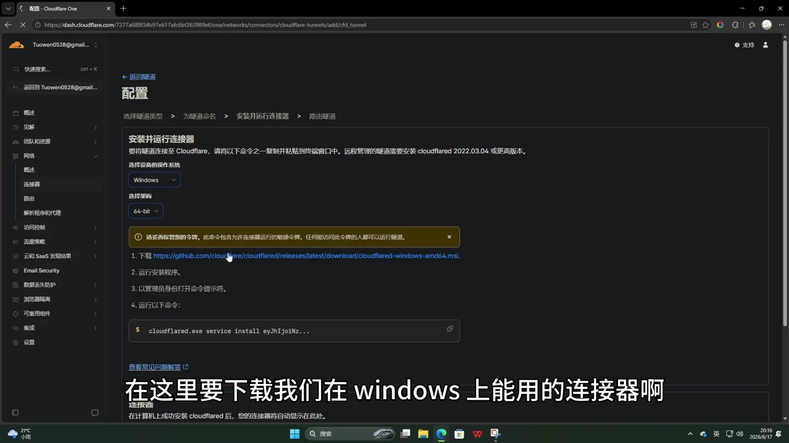
macOS、Linux 和 Docker 用户应在同一页面选择对应平台，不能使用本文的 Windows 命令。 -
下载 cloudflared
点击页面提供的 Windows 64 位下载链接，安装
cloudflared。 也可以从 Cloudflare 官方下载页 获取最新 Windows MSI。 -
复制页面生成的安装命令
页面会生成专属于当前隧道的命令，格式如下：
cloudflared.exe service install <YOUR_TUNNEL_TOKEN>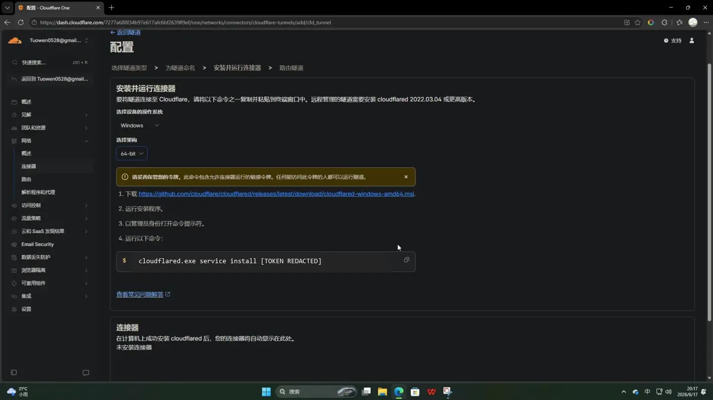
实际命令中的长字符串是 Tunnel Token，必须使用自己页面生成的值。
以管理员身份安装 cloudflared 服务
-
打开管理员命令提示符
点击 Windows 开始菜单，搜索
CMD或“命令提示符”，选择 以管理员身份运行。出现用户账户控制提示时允许运行。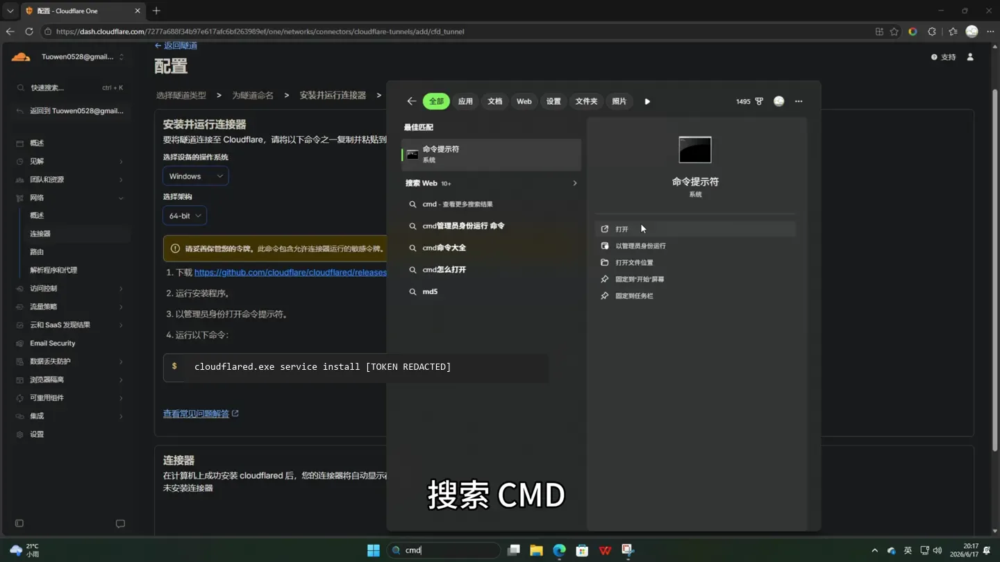
安装 Windows 服务需要管理员权限，普通终端可能提示访问被拒绝。 -
粘贴专属安装命令
把 Cloudflare 页面生成的完整命令粘贴到管理员命令提示符，按 Enter 执行。不要使用本文占位符命令。
-
等待服务安装完成
命令会把 cloudflared 注册成 Windows 服务，并使用 Tunnel Token 连接当前隧道。 成功后返回浏览器，点击页面上的 下一步。
-
可选：检查 Windows 服务
如果后台长时间显示未连接，可以在管理员终端运行：
sc query cloudflared服务状态应为
RUNNING。也可以按 Win + R， 输入services.msc，在服务列表中查找 cloudflared。
配置公网域名
-
选择自己的域名
进入“路由流量”或“Published application”配置。打开域名下拉框，选择已经托管在当前 Cloudflare 账户中的域名。视频使用作者自己的域名，仅作为演示。
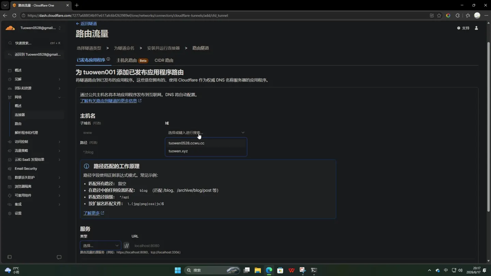
如果下拉框没有域名，需要先把域名添加到 Cloudflare 并完成 DNS 托管。 -
填写子域名
子域名可以自定义。视频填写的是
test，最终地址类似test.example.com。建议根据用途命名，例如：ai.example.com blog.example.com dev.example.com留空子域名会尝试使用根域名。为了避免影响现有网站，通常建议使用一个新的子域名。
-
路径通常留空
视频没有填写 Path。只有需要把特定 URL 路径映射到该服务时才填写，例如
/app。初次配置建议留空，先让整个子域名指向本地服务。
填写本地服务协议、地址和端口
-
选择服务类型
在 Service 类型下拉菜单选择 HTTP。 视频中的 llama.cpp WebUI 本地服务使用普通 HTTP，因此不能选择 HTTPS。
-
填写本地地址
URL 输入：
127.0.0.1:8080冒号必须使用英文半角
:。也可以写成：localhost:8080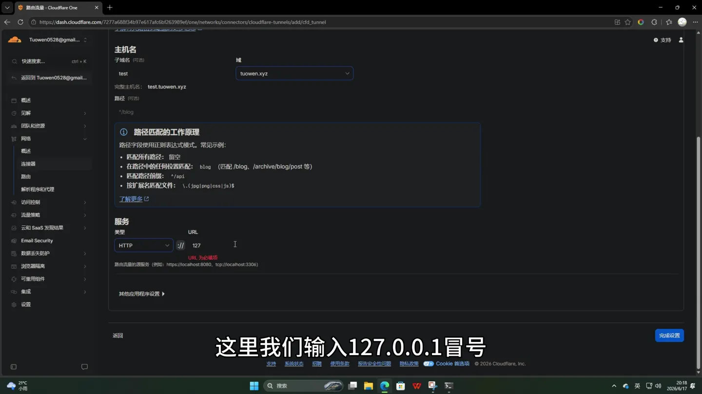
地址和端口必须与本地应用实际监听的位置一致。 -
不同应用要填写不同端口
8080只是视频中 llama.cpp 的端口。如果本地网站运行在 3000， 就应填写127.0.0.1:3000；如果运行在 8000，则填写127.0.0.1:8000。 -
点击完成设置
检查子域名、域名、服务类型和 URL 后，点击 完成设置 或 Add route。
保存配置并检查隧道状态
-
确认配置保存成功
页面出现绿色成功提示后，说明公网主机名与本地服务映射已经保存。
-
返回隧道概述
点击 概述，在 Cloudflare Tunnels 列表中找到刚创建的隧道。 隧道状态应显示健康或已连接。
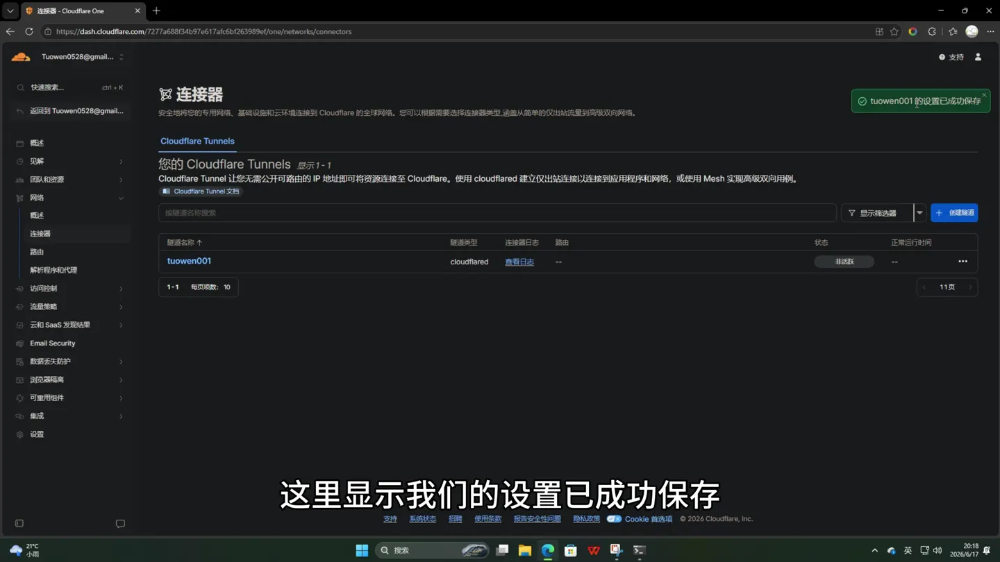
隧道已连接只代表 cloudflared 在线，不代表本地 8080 服务已经启动。
启动准备公开的本地服务
-
运行本地 AI 服务
视频打开上一篇教程配置好的 Qwen 本地模型启动脚本。命令窗口开始加载模型。 这一步可以替换成你自己的本地网站或开发服务器。
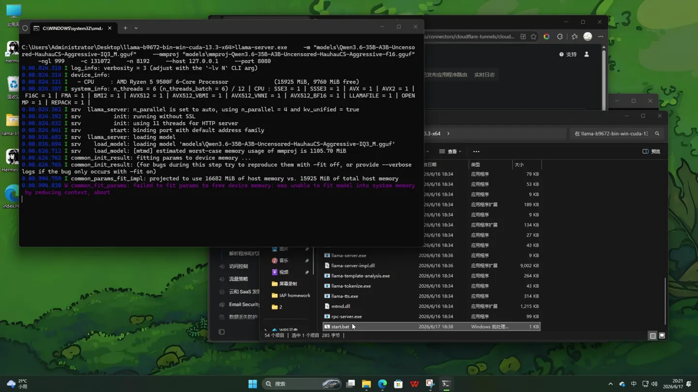
模型加载期间，8080 端口可能还没有准备好。 -
等待本地服务真正开始监听
llama.cpp 日志最终显示服务器监听：
http://127.0.0.1:8080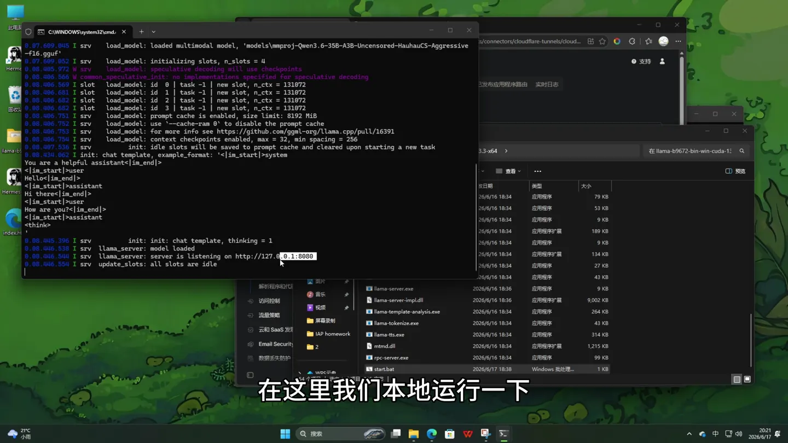
看到监听地址后，再测试本地和公网访问。 -
先在本机确认服务可访问
浏览器打开
http://127.0.0.1:8080。只有本地地址能正常打开， Cloudflare Tunnel 才有可转发的源站。
理解并排查 502 Bad Gateway
视频第一次打开公网域名时出现了 Bad gateway 和错误码 502。
这是因为 Tunnel 已经连接 Cloudflare，但本地 AI 服务还没有完全启动，cloudflared 无法访问
127.0.0.1:8080。
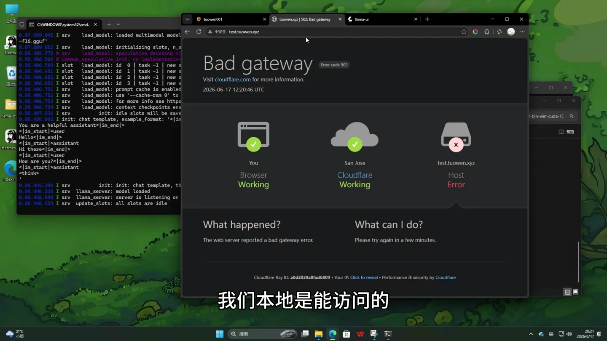
-
确认本地地址能打开
先访问
http://127.0.0.1:8080。本地也打不开时，不要继续修改 Cloudflare， 先修复应用本身。 -
检查端口是否监听
在命令提示符运行：
netstat -ano | findstr :8080没有输出通常说明没有程序监听 8080。若应用使用其他端口，应同步修改 Tunnel 的 Service URL。
-
核对 HTTP 与 HTTPS
本地服务是
http://时，Tunnel 类型必须选 HTTP。 错选 HTTPS 可能出现 TLS 或源站连接错误。 -
确认 cloudflared 与应用在正确电脑上
127.0.0.1指的是运行 cloudflared 的那台电脑。 如果应用在局域网另一台设备上，应填写该设备的局域网 IP，例如192.168.1.20:8080。
通过公网域名访问本地 AI
-
刷新公网域名
本地模型完成加载后，刷新之前配置的公网子域名。页面应从 502 错误切换为本地 AI WebUI。
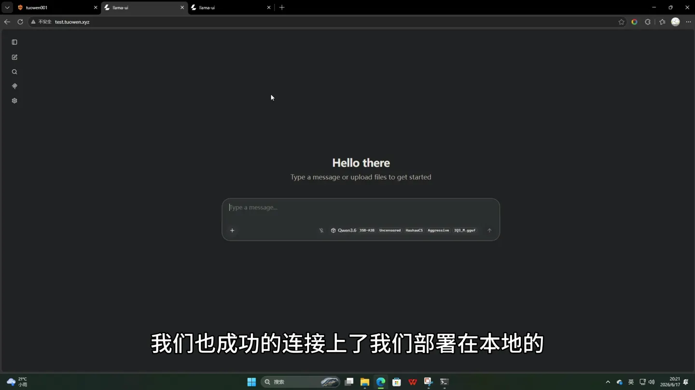
地址栏使用公网子域名，页面内容来自 Windows 电脑上的本地服务。 -
发送消息测试双向通信
视频输入“你好”，模型成功返回回答。这说明浏览器请求已通过 Cloudflare Tunnel 到达本地 AI， 模型响应也沿同一路径返回公网浏览器。
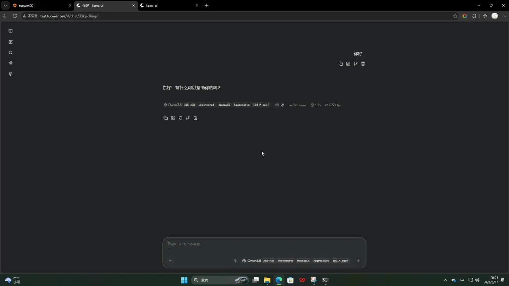
测试完成后，不需要公开访问时应关闭路由或增加身份验证。
公开服务前必须检查的安全事项
- 不要公开管理后台、数据库、路由器后台或没有密码的开发工具。
- 给 AI、博客后台等服务添加 Cloudflare Access 登录策略。
- 不要在截图、文章或聊天中泄露 Tunnel Token。
- 限制上传大小和请求频率，避免公网用户消耗本机磁盘、显存和带宽。
- 应用停止使用后，删除 Published application route 或暂停 Tunnel。
- 及时更新 cloudflared。Cloudflare 官方说明 Windows 版本不会自动更新。
常见问题
域名下拉框里没有可选域名怎么办？
先在 Cloudflare 控制台添加域名，并按照提示把域名的权威 DNS 切换到 Cloudflare。 域名尚未激活时，Published application 页面无法正常创建对应记录。
安装命令提示 Access is denied 怎么办？
关闭当前终端，重新搜索 CMD 或 PowerShell，并选择“以管理员身份运行”。 同时确认 cloudflared 已正确安装。
Tunnel 显示已连接，但域名仍然 502 怎么办？
502 表示 Tunnel 在线，但 cloudflared 无法访问本地服务。检查应用是否启动、端口是否正确、 HTTP/HTTPS 是否匹配，并先确认本地地址可以打开。
可以映射局域网里另一台电脑吗？
可以。把 Service URL 从 127.0.0.1:端口 改为目标设备的局域网 IP 和端口。
运行 cloudflared 的电脑必须能直接访问该局域网地址。
关闭本地电脑后公网域名还能用吗？
不能。cloudflared 和本地应用都依赖这台电脑运行。电脑关机、休眠、断网或应用退出后， Tunnel 无法继续把请求转发到服务。
Cloudflare Tunnel 是否等于隐藏本地服务的所有风险？
不是。Tunnel 避免了直接开放入站端口，但公开的应用仍可能有弱密码、越权、文件上传或代码执行漏洞。 Tunnel 是连接方式，不会自动修复应用安全问题。
官方资料与相关链接
- 本期 YouTube 视频
- Cloudflare Tunnel 设置指南
- 通过 Dashboard 创建 Tunnel
- cloudflared 官方下载
- Cloudflare Tunnel 常见错误说明
- 使用 Cloudflare Access 保护自托管应用
本文按 2026 年 6 月 20 日发布的视频整理。Cloudflare 的菜单名称和入口可能调整。 当前官方入口也可能显示为 Networking → Tunnels、Routes 和 Published application。 操作时请以 Cloudflare 官方页面为准。